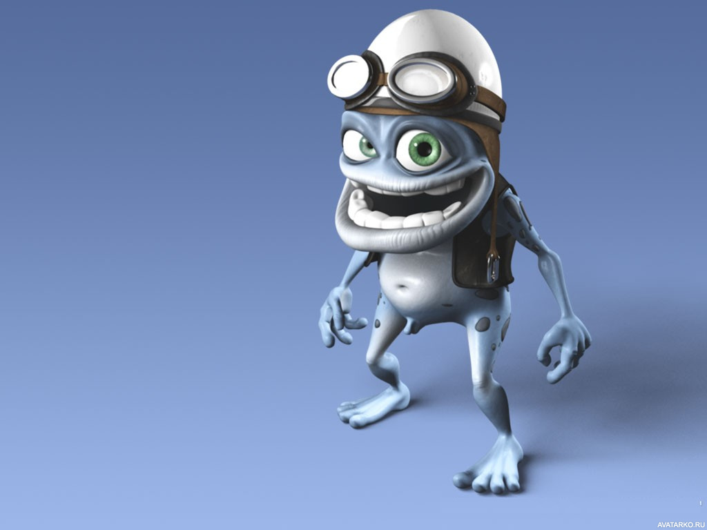

В лингвистике термин «текст» используется в широком значении, включая и образцы устной речи. Восприятие текста изучается в рамках лингвистики текста и психолингвистики. Так, например, И. Р. Гальперин определяет текст следующим образом: «Это письменное сообщение, объективированное в виде письменного документа, состоящее из ряда высказываний, объединённых разными типами лексической, грамматической и логической связи, имеющее определённый модальный характер, прагматическую установку и соответственно литературно
Единство предмета речи — это тема высказывания. Тема — это смысловое ядро текста, конденсированное и обобщённое содержание текста. Понятие «содержание высказывания» связано с категорией информативности речи и присуще только тексту. Оно сообщает читателю индивидуально-авторское понимание отношений между явлениями, их значимости во всех сферах придают ему смысловую цельность. В большом тексте ведущая тема распадается на ряд составляющих подтем; подтемы членятся на более дробные, на абзацы (микротемы). Завершённость высказывания связана со смысловой цельностью текста. Показателем законченности текста является возможность подобрать к нему мьтыимонукпфимтифорукпоийу оарьмрфпвгнбпиароюфуькамф